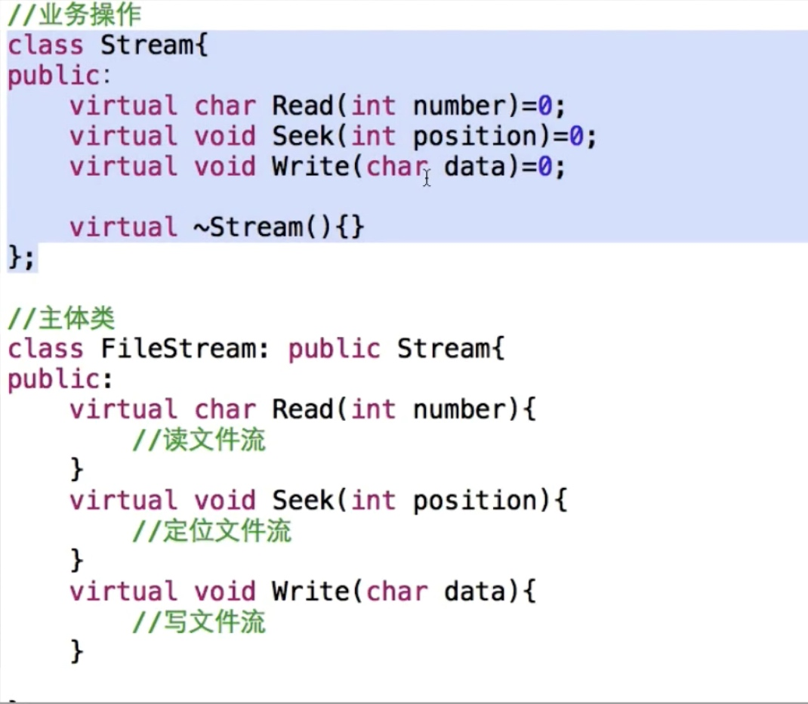
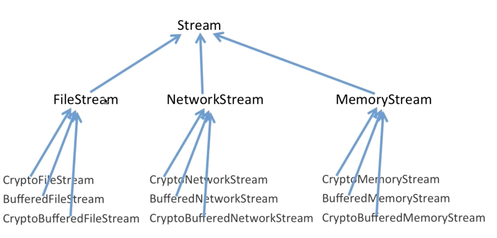
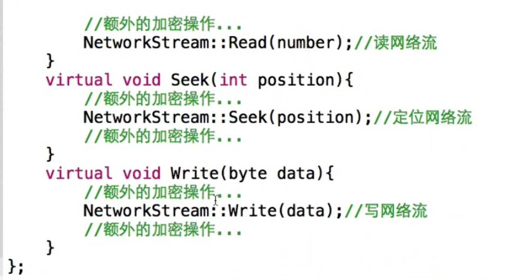
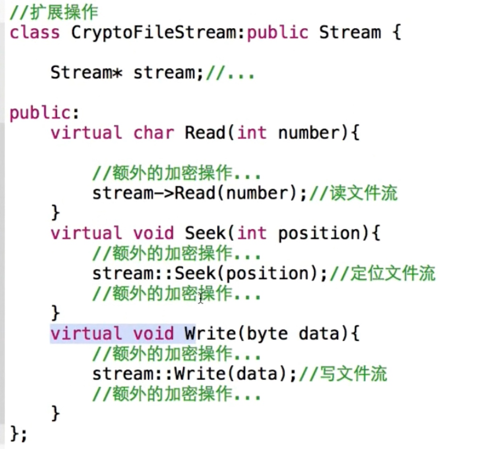
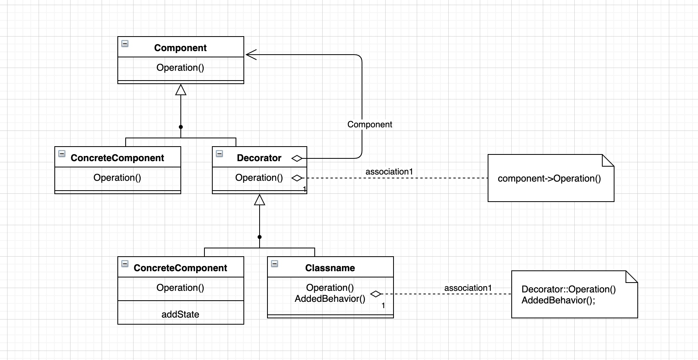
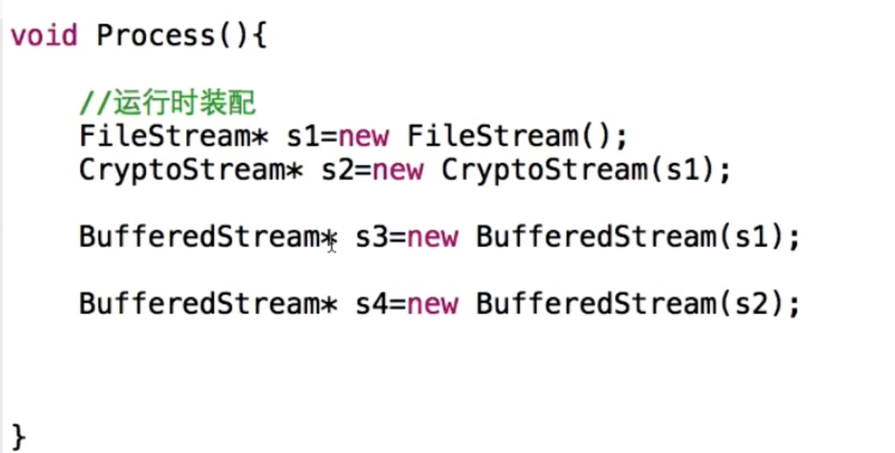
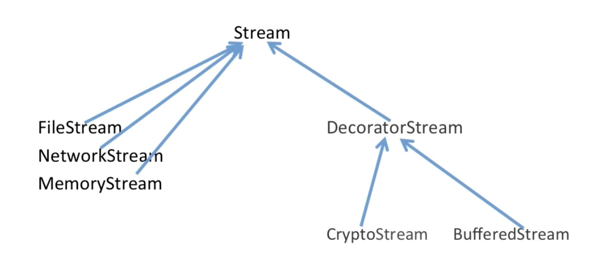
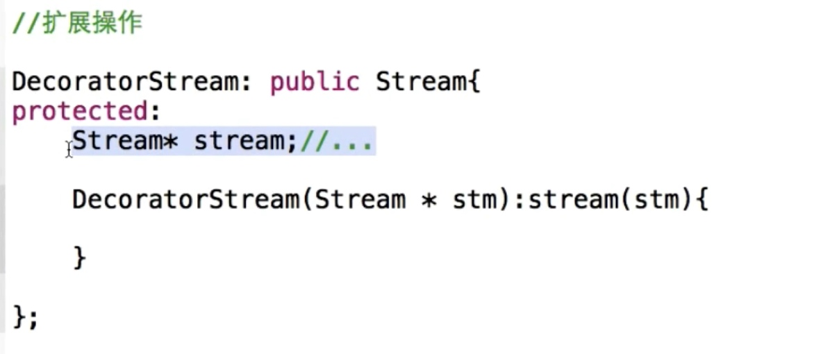

单一指责模式
- 在软件组件的设计中，如果责任划分的不清晰，使用继承得到的结果往往是随着需求的变化，子类急剧膨胀，同时充斥着重复代码，这时候的关键是划清责任
- 典型模式
- decorator
- bridge
动机
- 在某些情况下我们可能会“过度地使用继承来扩展对象的功能”，由于继承为类型引人的静态特质，使得这种扩展方式缺乏灵活性；并且随着子类的增多（扩展功能的增多），各种子类的组合（扩展功能的组合）会导致更多子类的膨胀
- 如何使“对象功能的扩展“能够根据需要来动态地实现？同时避免“扩展功能的増多”带来的子类膨胀问题？从而使得任何“功能扩展变化“所导致的影响将为最低？
demo
- 
- 
- 
- 
结构

slide
- 编译时共用
- 运行时多态
- 运行时装配
- 
重构之后

要点总结
通过采用组合而非继承的手法，Decorator 模式实现了在运行时动态扩展对象功能的能力，而且可以根据需要扩展多个功能。避免了使用继承带来的“灵活性差”和“多子类衍生问题”。
Decorator 类在接口上表现为 is- a Componenti 的继承关系，即 Decorator 类继承了 Component 类所具有的接口。但在实现上又表现为 has- a Component 的组合关系，即 Decorator 类又使用了另外个 Component 类。
Decorator/模式的目的并非解决“多子类衍生的多继承”问题，Decorator 模式应用的要点在于解决“主体类在多个方向上的扩展功能”一是为“装饰”的含义
装饰器的标示
- 
- 同时继承和组合
golang-demo
package decorator
type Component interface {
Calc() int
}
type ConcreteComponent struct{}
func (*ConcreteComponent) Calc() int {
return 0
}
type MulDecorator struct {
Component
num int
}
func WarpMulDecorator(c Component, num int) Component {
return &MulDecorator{
Component: c,
num: num,
}
}
func (d *MulDecorator) Calc() int {
return d.Component.Calc() * d.num
}
type AddDecorator struct {
Component
num int
}
func WarpAddDecorator(c Component, num int) Component {
return &AddDecorator{
Component: c,
num: num,
}
}
func (d *AddDecorator) Calc() int {
return d.Component.Calc() + d.num
}
package decorator
import "fmt"
func ExampleDecorator() {
var c Component = &ConcreteComponent{}
c = WarpAddDecorator(c, 10)
c = WarpMulDecorator(c, 8)
res := c.Calc()
fmt.Printf("res %d\n", res)
// Output:
// res 80
}
golang_demo2
type IMachine interface {
show()
}
type Machine struct {
name string
}
func (m *Machine) show() {
}
type AirCondition struct {
*Machine
}
func (a *AirCondition) show() {
println("machine name is " + a.name)
}
func NewAirCondition(name string) *AirCondition {
return &AirCondition{
Machine: &Machine{
name: name,
},
}
}
type Television struct {
*Machine
}
func (t *Television) show() {
println("machine name is " + t.name)
}
func NewTelevision(name string) *Television {
return &Television{
Machine: &Machine{
name: name,
},
}
}
type Decorator struct {
IMachine
}
func (d *Decorator) show() {
println(reflect.TypeOf(d.IMachine).String() + " show")
}
func NewDecorator(m IMachine) *Decorator {
return &Decorator{
IMachine: m,
}
}
type AirDecorator struct {
*Decorator
}
func (a *AirDecorator) show() {
a.external()
a.IMachine.show()
}
func (a *AirDecorator) external() {
println("AirDecorator external function")
}
func NewAirDecorator(m IMachine) *AirDecorator {
return &AirDecorator{
Decorator: NewDecorator(m),
}
}
type TeleDecorator struct {
*Decorator
}
func (a *TeleDecorator) show() {
a.external()
a.IMachine.show()
}
func (a *TeleDecorator) external() {
println("TeleDecorator external function")
}
func NewTeleDecorator(m IMachine) *TeleDecorator {
return &TeleDecorator{
Decorator: NewDecorator(m),
}
}
func TestMachineDecorator(t *testing.T) {
air := NewAirCondition("air")
dec1 := NewAirDecorator(air)
dec1.show()
tele := NewTelevision("tele")
dec2 := NewTeleDecorator(tele)
dec2.show()
}
cpp_demo
#include <iostream>
class Machine
{
public:
std::string _name;
public:
Machine(std::string tmp) :_name(tmp){}
Machine(){}
virtual void show() = 0;
};
class AirCondition:public Machine
{
public:
AirCondition(std::string name):Machine(name){}
AirCondition(){}
virtual void show()
{
std::cout<<"machine name is " << _name << std::endl;
}
};
class Television:public Machine
{
public:
Television(std::string name):Machine(name){}
Television(){}
virtual void show()
{
std::cout<<"machine name is " << _name << std::endl;
}
};
class Decorator:public Machine
{
protected:
Machine* _person; //要进行装饰的类
public:
Decorator(Machine* tmp)
{
_person = tmp;
}
virtual void show()
{
_person->show();
}
};
class AirDecorator :public Decorator
{
public:
AirDecorator(Machine *tmp):Decorator(tmp){}
virtual void show()
{
this->ExternalFunction();
Decorator::show();
}
void ExternalFunction() //额外功能
{
std::cout << "AirDecorator ExternalFunction " << std::endl;
}
};
class TeleDecorator :public Decorator
{
public:
TeleDecorator(Machine *tmp):Decorator(tmp){}
virtual void show()
{
this->ExternalFunction();
Decorator::show();
}
void ExternalFunction() //额外功能
{
std::cout << "TeleDecorator ExternalFunction " << std::endl;
}
};
int main()
{
Machine *air = new AirCondition("air");
Decorator * dec1 = new AirDecorator(air);
dec1->show();
Machine *tele = new Television("tele");
Decorator * dec2 = new TeleDecorator(tele);
dec2->show();
}
python_code
from abc import ABCMeta, abstractmethod
class Machine(metaclass=ABCMeta):
@abstractmethod
def show(self):
pass
def __init__(self, name):
self.name = name
class AirCondition(Machine):
def __init__(self, name):
super().__init__(name)
def show(self):
print("machine name is {}".format(self.name))
class Television(Machine):
def __init__(self, name):
super().__init__(name)
def show(self):
print('machine name is {}'.format(self.name))
class Decorator(Machine):
def __init__(self, machine):
self.machine = machine
def show(self):
self.machine.show()
class AirDecorator(Decorator):
def __init__(self, machine):
super().__init__(machine)
def show(self):
self.external_function()
super().show()
def external_function(self):
print('air decorator external function')
class TeleDecorator(Decorator):
def __init__(self, machine):
super().__init__(machine)
def show(self):
self.external_function()
super().show()
def external_function(self):
print('tele decorator external function')
if __name__ == '__main__':
air = AirCondition('air')
dec1 = AirDecorator(air)
dec1.show()
tele = Television('tele')
dec2 = TeleDecorator(tele)
dec2.show()
golang_demo
package desian_pattern_practise
import (
"fmt"
"reflect"
)
type IPerson interface {
Wear()
}
type Person struct {
name string
}
func (p *Person) Wear() {
}
type Engineer struct {
*Person
skill string
}
func (e *Engineer) Wear() {
fmt.Println(reflect.TypeOf(e).String(), "I'm", e.name, "skill", e.skill)
}
func NewEngineer(name, skill string) *Engineer {
return &Engineer{
Person: &Person{
name: name,
},
skill: skill,
}
}
type Teacher struct {
*Person
title string
}
func (e *Teacher) Wear() {
fmt.Println(reflect.TypeOf(e).String(),"I'm", e.name, "title", e.title)
}
func (e *Teacher) NewTeacher(name, title string) *Teacher {
return &Teacher{
Person: &Person{
name: name,
},
title: title,
}
}
type Decorator struct {
IPerson
}
func (d *Decorator) Wear() {
println(reflect.TypeOf(d.IPerson).String() + " Wear")
d.IPerson.Wear()
}
type CasualPan struct {
*Decorator
}
func (c *CasualPan) Wear() {
c.Decorator.Wear()
c.Decorate()
}
func (c *CasualPan) Decorate() {
println("CasualPan")
}
func NewCasualPan(person IPerson) *CasualPan {
return &CasualPan{
Decorator: &Decorator{
IPerson: person,
},
}
}
type Belt struct {
*Decorator
}
func (c *Belt) Wear() {
c.Decorator.Wear()
c.Decorate()
}
func (c *Belt) Decorate() {
println("Belt")
}
func NewBelt(person IPerson) *Belt {
return &Belt{
Decorator: &Decorator{
IPerson: person,
},
}
}
type LeatherShoes struct {
*Decorator
}
func (c *LeatherShoes) Wear() {
c.Decorator.Wear()
c.Decorate()
}
func (c *LeatherShoes) Decorate() {
println("LeatherShoes")
}
func NewLeatherShoes(person IPerson) *LeatherShoes {
return &LeatherShoes{
Decorator: &Decorator{
IPerson: person,
},
}
}
package desian_pattern_practise
import "testing"
func TestDecorator_Wear(t *testing.T) {
engineer := NewEngineer("ming", "Golang")
pant := NewCasualPan(engineer)
belt := NewBelt(pant)
shoes := NewLeatherShoes(belt)
shoes.Wear()
}
cpp_demo
//
// Created by eredinliu on 2020-02-01.
//
#include <iostream>
using namespace std;
class Person {
public:
virtual void Wear() { cout << "person wear" << endl; }
Person(const string& name) : name_(name) {}
Person() {}
protected:
string name_;
};
class Engineer : public Person {
public:
Engineer(const string& name, const string& skill) : Person(name),
skill_(skill) {}
string& GetSkill() {return this->skill_;}
void Wear() {
cout << "I'm " << name_ << " engineer " << name_ << endl;
Person::Wear();
}
private:
string skill_;
};
class Decorator : public Person {
public:
Decorator(Person* person) : decorated_(person) {}
void Wear() {
this->decorated_->Wear();
this->Decorate();
}
virtual void Decorate() = 0;
protected:
Person* decorated_;
};
class CasualPant : public Decorator {
public:
CasualPant(Person* person) : Decorator(person) {}
void Decorate() {
cout << "CasualPant" << endl;
}
};
class Belt : public Decorator {
public:
Belt(Person* person) : Decorator(person) {}
void Decorate() {
cout << "Belt" << endl;
}
};
class LeatherShoes : public Decorator {
public:
LeatherShoes(Person* person) : Decorator(person) {}
void Decorate() {
cout << "LeatherShoes" << endl;
}
};
int main() {
Person* tony = new Engineer("engineer", "Go");
Person* pant = new CasualPant(tony);
Person* belt = new Belt(pant);
Person* shoes = new LeatherShoes(belt);
shoes->Wear();
}